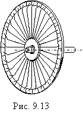

9.4.3.3. Микродвигатели с гладким и с дисковым якорем
Микродвигатели с гладким якорем. В
микродвигателях с беспазовым (гладким) якорем обмотку якоря укладывают
не в пазах, а на гладкой поверхности якоря и заливают эпоксидной смолой с
ферромагнитным заполнением, что увеличивает быстродействие машины и уменьшает
момент инерции якоря.

Микродвигатели с дисковым якорем. Микромашины постоянного тока с дисковым якорем (рис. 9.13) имеют плоскую печатную обмотку якоря, нанесённую на тонком диске из немагнитного материала (керамики, текстолита). Проводники обмотки якоря располагают по обе стороны диска и соединяют их гальваническими соединениями
через сквозные отверстия в диске. Каждая секция печатной обмотки состоит из
двух проводников, расположенных на различных сторонах диска. Роль коллектора
выполняют части проводников, расположенные на одной стороне дискового якоря, по
которым скользят щетки.
Возбуждение машины осуществляется постоянными
магнитами с полюсными наконечниками, имеющими форму кольцевых сегментов. Создаваемый
ими магнитный поток проходит в аксиальном направлении через два воздушных
зазора и дисковый якорь с печатной платой и замыкается по двум кольцам из
магнитной стали. Вращающий момент МДПТ с дисковым якорем создаётся так же, как и в двигателях с цилиндрическим якорем, в результате взаимодействия тока в обмотке якоря с магнитным полем статора. Он действует в плоскости дискового якоря и приводит его во вращение.
Преимуществами МДПТ с дисковым якорем являются:
• небольшой момент инерции якоря, что обеспечивает высокое быстродействие двигателя;
• хорошие условия коммутации из-за малой индуктивности секций якорной обмотки, что повышает срок службы щёток;
• лучшие условия охлаждения печатной обмотки по сравнению с обмоткой, уложенной в пазах якоря. Это даёт возможность значительно повысить плотность тока в проводниках обмотки якоря (до 30...40 А/мм2 при длительном режиме; до 100 А/мм2 при кратковременных перегрузках) и уменьшить благодаря этому массу и габаритные размеры машины;
• небольшой шум из-за отсутствия на якоре зубцов и малой его массы, вследствие чего вращение якоря происходит без вибраций.
Недостатками МДПТ с дисковым якорем являются:
• большая МДС возбуждения из-за увеличенного
воздушного зазора и увеличение потерь мощности вследствие повышенной плотности
тока в обмотках якоря и возбуждения. Однако в рассматриваемых машинах практически
отсутствуют потери в стали, поэтому при возбуждении их от постоянных магнитов
КПД имеет приблизительно такое же значение, как и в обычных машинах;
• меньший срок службы из-за износа проводников печатной обмотки, возникающего от трения щеток.